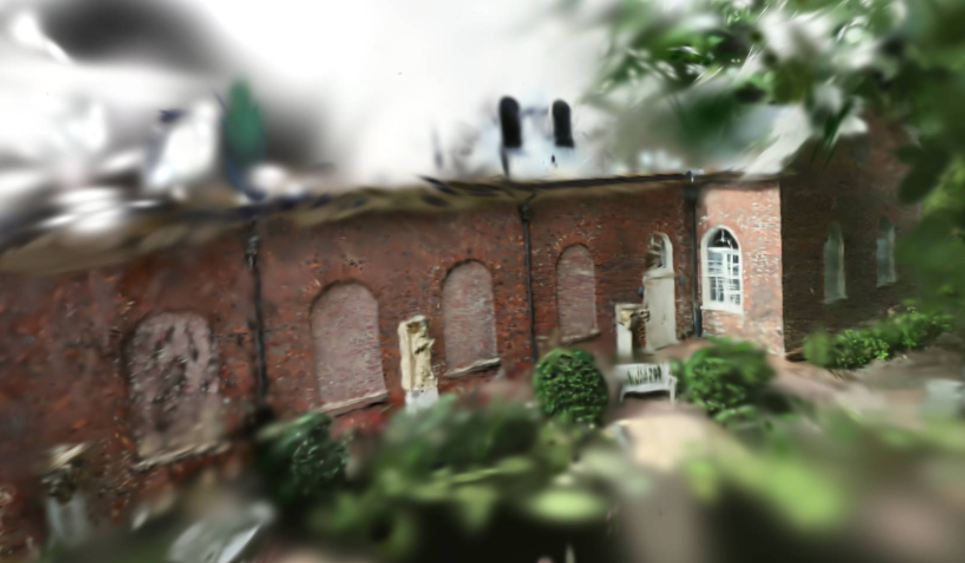
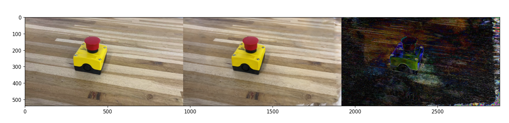
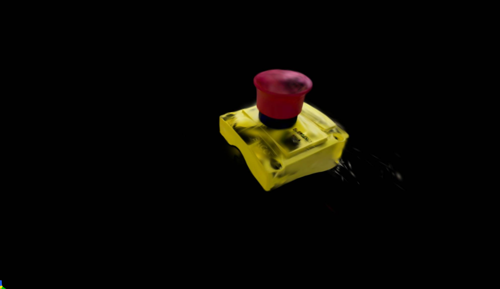
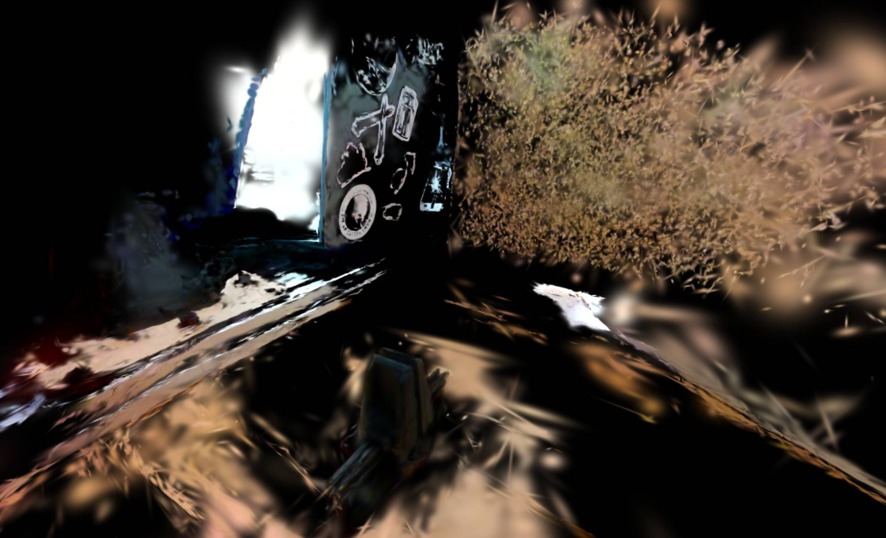
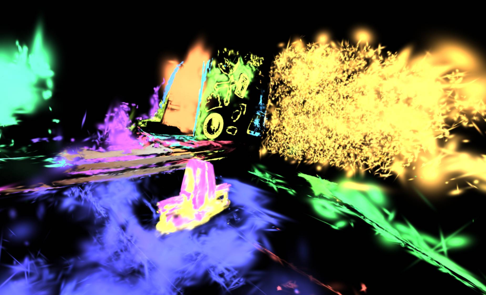

Image Processing and Reconstruction
On the image processing and reconstruction side of the project, our goal is to reconstruct a 3D scene via Gaussian Splatting, compare the results of that reconstruction with true photos, and then do some post-processing on the reconstruction to isolate the object that the arm scans.
What is Gaussian Splatting?
Gaussian Splatting is a modern approach to 3D reconstruction distinguished by the Gaussian rendering primitives that it fits to a frame.
Suppose we have this goal:
We want to view how an object looks in three dimensions given photos of it only in two dimensions. This sounds difficult, but a solid object is still a solid object --- we only need to see around it, not inside it, for this task. If our object is small and convex, this doesn't sound difficult to do if we get to take a bunch of different images. Yet, how do we know how to stich the images together?
This is where feature matching comes in --- if we can isolate keypoints of an image and match keypoints with similar descriptors, we cam estimate how the camera has moved relative to the object. Just as with visual odometry, we can triangulate these keypoints in space and populate a map of them. Unlike visual odometry, however, the end goal isn't to know our movement, but to know the structure of the keypoints we triangulate --- thus the name Structure from Motion.
After we locate the keypoints in space and potentially do some refinement of them, we have a sparse reconstruction --- the shape of the object is visible, but it's mostly empty. Generating a full reconstruction, one that will look like the images we fed into the algorithm, is an expensive process that consists of us iteratively adding to or subtracting from our reconstruction, comparing it against our input images, and making further adjustments for as long as we like.
What makes Gaussian splatting unique, though, is that unlike most other forms of reconstrution, it doesn't generate a triangular mesh --- instead, it generates a large amount of multivariate normal distributions in space. While the Gaussians are typically represented with a mean and a covariance, the covariance actually encodes the same amount of information as their scale along each X,Y,Z axis and their rotation. Because Gaussians in space sort of look like fuzzy ellipsoids, they end up performing very well when it comes to blending colors, reflecting light, and approximating an image in general. Additionally, Gaussians are continuous and differentiable, which makes optimization in a neural network much easier than with a triangular mesh.
With Gaussian splatting, we can end up with reconstructions like these:

Given that there are continually updating libraries refining code for Gaussian splatting and making it easier and easier to use, we were quite excited to try it our for our project.
Generating the gsplt reconstruction
Processing video or frames
The process for generating the gsplat reconstruction is very similar to the conceptual overview above. In this case, we rely on the COLMAP library to do the feature extraction, matching, and sparse reconstruction. We then simply feed the sparse reconstruction into gsplat, an impressive library that works in a number of different Gaussian splatting approaches into a very configurable library.
For testing purposes, it's often useful to run gsplat on a reconstruction of a video, rather than the actual frames captured by the camera on the arm.
To do this, we provide process_video.py to make this process easier. The function takes a path to a video file as its first argument and a number of frames to skip per frame saved as the second argument.
For instance,
python3 process_video.py example_video.mp4 10
would save every 10th frame of example_video.mp4 to a new directory, with its name consisting of "images_" prepended to the path passed as input, located within the current working directory.
If we already have a directory of images from performing the scan with the arm, we don't need to do this step.
COLMAP can then be used in three ways --- the GUI, the (now depreacted) Python bindings, or from the command line.
The simplest way is to use the command line, assuming COLMAP has been installed. Assuming images are in the scan_1 directory:
colmap database_creator --database_path scan_1/colmap/database.db
colmap feature_extractor --database_path scan_1/colmap/database.db --image_path scan_1 --ImageReader.single_camera 1
colmap exhaustive_matcher --database_path scan_1/colmap/database.db
colmap mapper --database_path scan_1/colmap/database.db --image_path scan_1 --output_path scan_1/colmap/sparse
The following commands do, in order:
- Generate an empty database file for COLMAP to track information in
- Extract keypoints from the images (typically using SIFT)
- Match keypoints between images without the assumption consecutive frames are sequential in time. This is the "exhaustive" part of exhaustive matching.
- Generate a sparse map of the keypoints in space and camera poses using the keypoint matches.
After this, the next step is to actually run gsplat and train a reconstruction off of the COLMAP results.
Assuming you're at the root of this project and cloned recursively (i.e. the gsplat/ folder is contained in the working directory), run the following, changing the path to point at your COLMAP result directory:
mkdir -p results/
python3 gsplat/examples/simple_trainer.py default --data_dir ./scan_1/ --data_factor 1 --result_dir ./results/scan_1/
While this runs, an interactive visualizer is avaliable at localhost on port 8080.
When the code has finished running, the results will be in the ckpts/ directory off of the specified result directory. They can be viewed in the interactive visualizer with the following command:
python3 gsplat/examples/simple_viewer.py --ckpt results/scan_1/ckpts/ckpt_6999_rank0.pt
Computing metrics from the gsplat reconstruction
In a further-developed iteration of this project, we would be more interested in the quality of our reconstructions via gsplat as a function of the images (and therefore path to take those images on the arm). This would give us some insight on what diversity of viewing angles is helpful in generating the best reconstruction from the fewest training frames, as the algorithm runs faster for fewer frames. It would also be interested to see if this depends on the object being scanned.
While we haven't implemented that entire vision, we wanted to have some way of measuring the accuracy of the reconstructions, not their compute speed or performance.
Our idea for this was inspired by the renders/ directory gsplat automatically generates off of the root results directory, which contains side-by-side comparisons of specific training images with the reconstruction from the same viewing position and angle.
We were concerend that viewing our results by these renders alone made them appear better than they were, as the reconstruction is fit to the training data, and should be most accurate at these locations. The reconstruction would often start to fall off in quality viewed from unfamiliar angles.
Instead, we added support for using an image outside the training set (i.e. test data) to judge the reconstruction against. We began with the documentation of the rasterization function at https://docs.gsplat.studio/main/apis/rasterization.html, which describes the function signature for projecting a 3D scene of Gaussians to an image.
It's not hard to load the gsplat results into a Python script, as the data is represented as a PyTorch tensor with fields for all of the parameters (mean, opacity, etc.)
The first difficult step of the process is to specify the position of the training image. When COLMAP is used to build a reconstruction, it expresses coordinates of each camera frame in its own coordinate system while also estimating camera intrinsics relative to this coordinate system. This information is stored in the images.txt and cameras.txt folders of the COLMAP output directory, respectively. Assuming our images are from one camera and thus have only a single set of intrinsics, we define functions in metrics.py to interpret these intrinsics and camera positions, given a path to the relevant text file.
One challenge we ran into was, even with the right position and camera intrinsics, the reconstruction view being entirely off --- typically a solid color. Eventually, we fixed this issue by manually comparing our reconstruction code against the internal gsplat code that invokes the rasterization() function we use.
Though not mentioned in the documentation for this function, two of our parameters are non-normalized or non-activated values that need to be passed through a separate function to be usable. Specifically, the opacities tensor needed to be passed through a sigmoid function, and scales needed to be passed through an exponential function. After performing both of these operations, our reconstruction looked as it should.

For testing purposes, we plotted a comparison of the reconstruction (center) against a training photo with very similar angle. On the right is the image produced by taking the magnitude of the difference between each of the R,G, and B channels across the two images for every pixel, and scaling these differences by 5 to make the difference visible. As we can see, the errors here lie primarily around the sharper outlines of the e-stop against the table. We also take the average error per pixel and print it.
To measure against test images, we need to train COLMAP twice --- once on training data plus test images, and once only on training data. The run with only training data goes into gsplat.
By using COLMAP's model aligner, we can have COLMAP convert the coordinates of one model to be consistent with the coordinates of another. Therefore, if we have models model_test and model_train, we can run the following:
colmap model_aligner --input_path model_test --ref_model_path model_train --output_path model_test_aligned --alignment_type custom
Now, the COLMAP reconstruction in model_test_aligned should have a coordinate system consistent with model_train, and is a valid target for extracting camera poses from.
Isolating an object in the gsplat reconstruction
Our secondary goal for post-gsplat image processing was performing some nontrivial operation on the splatted results to meaningfully change the visualization.
In our case, we decided that if our project was scanning an isolated object on a table, we could try and directly work with the splats to isolate that image and mask out the background. This functionality is contained in process_gaussians.py
To do this, we load the splatted results as a PyTorch tensor on the CPU, allowing us to edit the properties of splats directly. Our thought was that we could segment the reconstruction using distances and colors between points when defining clusters, mask out outliers, and mask out clusters more indicative of being part of the table than the object. Our very simple approach to this is that we know the table is flat, and the object is likely not, so clusters with much larger horizontal standard deviations in position than vertical are likely part of the table.
We perform the clustering using the Hierarchical Density-Based Spation Clustering of Applications with Noise (HDBSCAN) method implemented here, which works well when data has clusters of varying density and complex shape. As we want our clusters to get similar objects and surfaces as the same cluster, we encode not only position (means) into the clustered data, but also the zeroth spherical harmonic of color, which encodes the base color of every splat. After some initial testing, we decided that even more emphasis of color was necessary to get good clusters --- currently, we add the zeroth spherical harmonic data twice, and scale one of those by ten in case the gives more weight to that dimension.
The clustering isn't perfect --- many of the data points are rejected as outliers, so the result ends up being pruned no matter what --- though the basic functionality is present. Setting the min_cluster_size parameter to something great (i.e. 500 or 1000) also encouraged more big clusters to form, while removing a few more Gaussians as outliers. Then, we just mask out all the Gaussians in outlier clusters or very horizontal clusters, save the resulting data into a new file, and view it the same.

On our e-stop data, the isolation works fairly well --- the e-stop itself is in worse condition, losing some of its data, and there are a few Gaussians in the external environment that are retained, yet the overall function of the algorithm is present.
We performed this same processing on the scan of the arm's end effector, with slightly less effective results.

As can be seen, however, some of this is expected --- the arm scan environment was more cluttered than we anticipated, with one laptop being in view and another clipboard put up to block movement off the side of the frame from confusing the reconstruction. These are generally retained, as is a small part of the table. In general, though, the selection of clusters is close to what we would like, and viewing the independent clusters that remain demonstrates how this processing was in fact able to isolate the parts of the reconstruction that had a more interesting shape to them.

Again, there are many more refined ways this could be done, as well as ways in which this method could be further tuned. In the interest of time, however, we were satisfied with this performance as a proof-of-concept that the general idea can work --- we can process Gaussians directly to apply some meaningful transformation to the 3D reconstruction produced by Gaussian splatting.